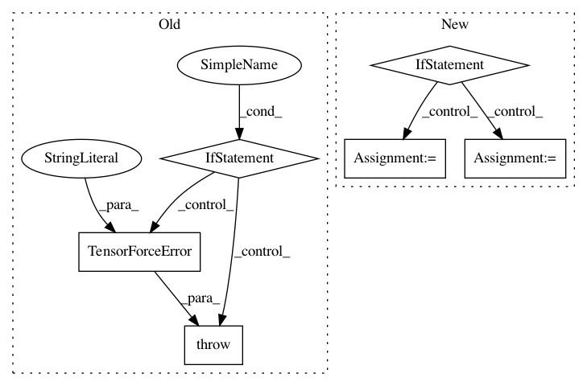

3f91c1f276c254fcb39df3fd1d03464366930503,tensorforce/contrib/unreal_engine.py,UE4Environment,execute,#UE4Environment#Any#,126
Before Change
self.protocol.send(message, self.socket)
// wait for response (blocks)
response = self.protocol.recv(self.socket)
if "obs_dict" not in response:
raise TensorForceError("Message without field "obs_dict" received!")
self.last_observation = response["obs_dict"] // cache last observation
return response["obs_dict"], response.get("is_terminal", False), response.get("reward", 0.0)
After Change
// TODO: what if more than one actions are passed?
// discretized -> each action is an int
if self.discretize_actions:
// pull record from discretized_actions, which will look like: [A, Right, SpaceBar]
combination = self.discretized_actions[actions]
// -> translate to {"axis_mappings": [("A", 1.0), (Right, 1.0)], "action_mappings": [(SpaceBar, True)]}
for key, value in combination:
// action mapping (True or False)
if isinstance(value, bool):
action_mappings.append((key, value))
// axis mapping: always use 1.0 as value as UE4 already multiplies with the correct scaling factor
else:
axis_mappings.append((key, value))
//logging.debug("axis_mappings={} action_mappings={}".format(axis_mappings, action_mappings))
// non-discretized: each action is a dict of action- and axis-mappings defined in UE4 game"s input settings
// re-translate incoming action names into keyboard keys for the server
elif actions:
try:
action_mappings, axis_mappings = self.translate_abstract_actions_to_keys(actions)
except KeyError as e:
raise TensorForceError("Action- or axis-mapping with name "{}" not defined in connected UE4 game!".format(e))
// message = {"cmd": "step", "delta_time": 0.33,
// "actions": [("X", True), ("Y", False)],
// "axes": [("Left": 1.0), ("Up": -1.0)]
// }
message = dict(cmd="step", delta_time=self.delta_time, num_ticks=self.num_ticks, actions=action_mappings, axes=axis_mappings)
self.protocol.send(message, self.socket)
// wait for response (blocks)
response = self.protocol.recv(self.socket)
In pattern: SUPERPATTERN
Frequency: 3
Non-data size: 6
Instances
Project Name: reinforceio/tensorforce
Commit Name: 3f91c1f276c254fcb39df3fd1d03464366930503
Time: 2017-12-17
Author: svenmika1977@gmail.com
File Name: tensorforce/contrib/unreal_engine.py
Class Name: UE4Environment
Method Name: execute
Project Name: reinforceio/tensorforce
Commit Name: c794fa99318462b5b04b77cfff27428d85cfb443
Time: 2017-12-17
Author: svenmika1977@gmail.com
File Name: tensorforce/contrib/unreal_engine.py
Class Name: UE4Environment
Method Name: execute
Project Name: reinforceio/tensorforce
Commit Name: cf6d258c003a5a5b5073830e73e4580aeaf71d45
Time: 2017-06-24
Author: aok25@cl.cam.ac.uk
File Name: examples/openai_gym.py
Class Name:
Method Name: main